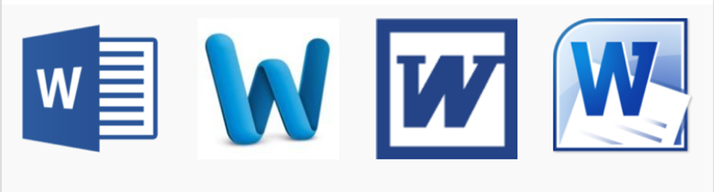

Using Word
Launching (= Opening/Starting) the Word App on Your Computer
Use one of the following approaches, whichever works:
- Fastest approach: use the “search” bar/box to search for “Word”. In the search results, when you see either of the following icons (= small logos) or similar, either click or double-click on it to open Word:

Four (4) Word App Logos. Taken from Creating a New Blank Document and Finding Your Way Around.
- On a Windows computer (including the CUNY Virtual Desktop,) click the Start button ( or
 or ) and look for either of the Word icons in the Start menu (= list of files, folders, or app icons.)
or ) and look for either of the Word icons in the Start menu (= list of files, folders, or app icons.) - On a Mac computer, look for either of the Word icons in the Applications
- Look for a Word icon on the Desktop folder of the computer.
 These notes by Miriam Briskman are licensed under CC BY-NC 4.0 and based on sources.
These notes by Miriam Briskman are licensed under CC BY-NC 4.0 and based on sources.